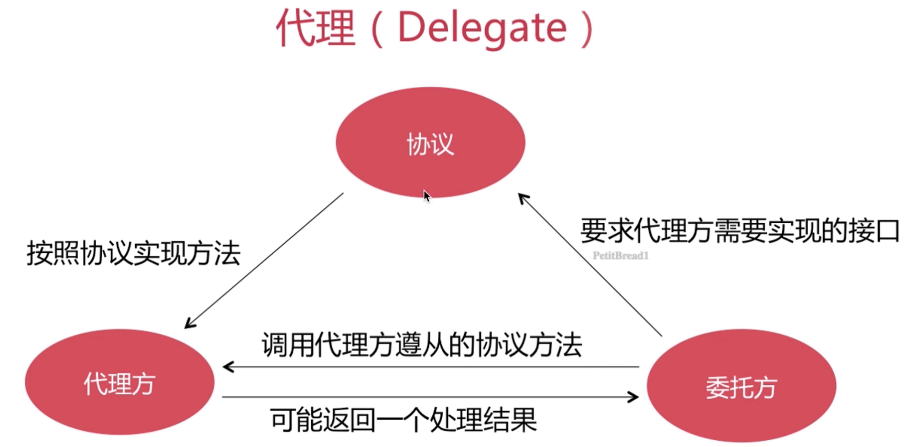
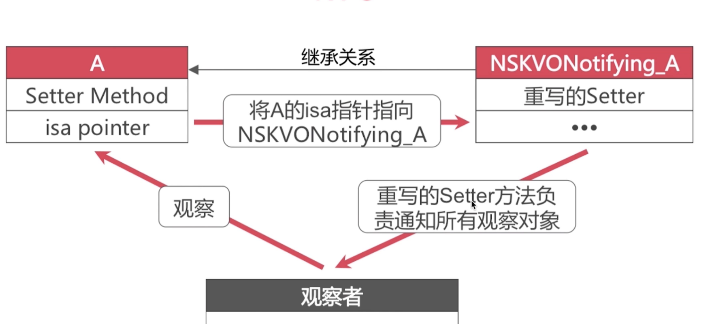
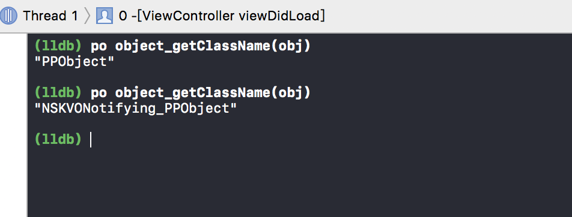
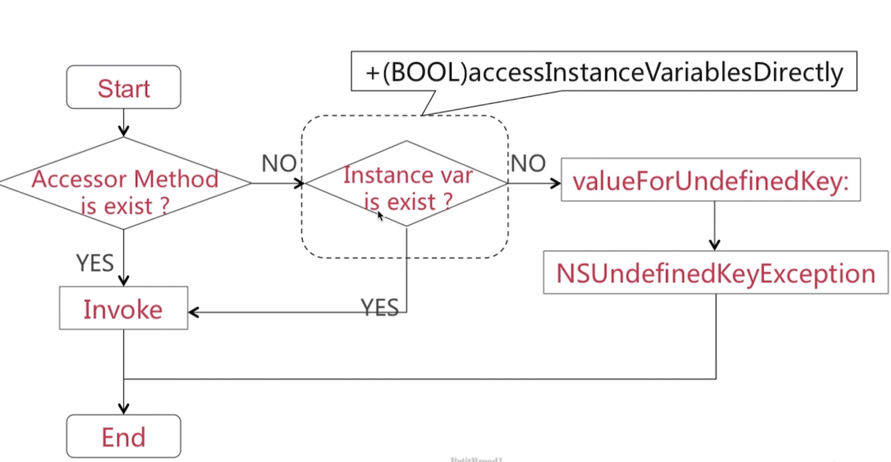
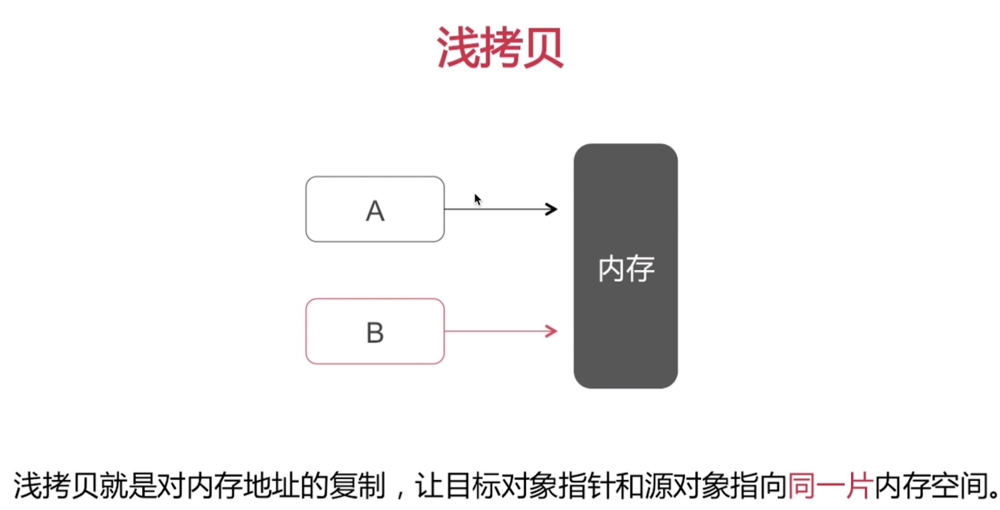
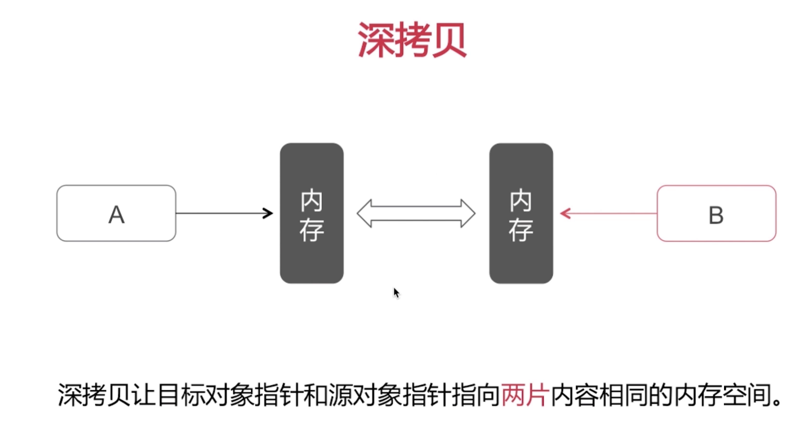
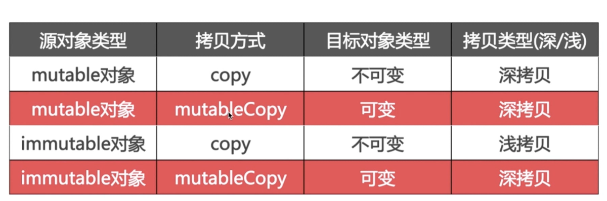

- 分类 & 关联对象 & 扩展 & 代理
- 通知
- KVO
- KVC
- 属性关键字
分类
- 你用分类都做了哪些事 ?
- 声明私有方法
- 分解体积庞大的类文件
把 Framework 的私有方法公开
特点
讲特点是为了能更好的和扩展区分开来
分类不能添加成员变量。只能通过关联对象(objc_setAssociatedObject)来模拟实现成员变量，但其实质是关联内容，所有对象的关联内容都放在同一个全局容器哈希表中:AssociationsHashMap,由AssociationsManager统一管理。
- 运行时决议 — 比如一个数组类，在编好分类文件之后，并没有把分类当中对应添加的内容附加到相应的数组类，而是在运行时通过 runtime 真实的添加到数组类中
- 可以为系统类添加分类
分类中都可以添加哪些内容
- 实例方法
- 类方法
- 协议
属性(不是添加实例变量，实例变量需要通过关联对象添加)
看一下分类的成员结构
1 | typedef struct category_t { |
分类的实现机制
同一个类有多个分类，每个分类有一个同名方法，哪一个方法会生效?
最后编译的分类当中的方法会最终生效
具体可以理解下objc-runtime-new .mm,做了些注释拆解.
- 分类添加的方法可以覆盖原类方法
- 同名分类方法谁能生效取决于编译顺序
- 名字相同的分类会引起编译报错
关联对象
先看一下常用的俩个方法
1 | id objc_getAssociatedObject(id object , const void *key) |
关联对象所添加的成员变量被添加到了哪里？
- 关联对象由 AssociationsManager 管理并在 AssociationsHashMap存储。
- 所有的对象的关联内容都在同一个全局容器中
扩展相关问题
一般用扩展做什么
- 声明私有属性
- 声明私有方法
- 声明私有成员变量
扩展的特点 (和分类的区别)
- 编译时决议
- 只以声明的形式存在，多数情况下寄生于宿主类的.m中
- 不能为系统类添加扩展
- 不能为系统类添加扩展
代理
- 准确的说是一种软件设计模式
- iOS当中以@protocol形式提现
- 传递方式一对一
代理的实现流程

- 一般声明为weak以规避循环引用
通知
- 是使用观察者模式来实现用于跨层传递消息的机制
- 传递方式为一对多
KVO
使用观察者设计模式,使用isa混写技术。
当A类实例被KVO监听时，Runtime会转建一个继承自A类的新类NSKVONotifying_A，并重写被观察属性的setter和getter方法。如果代码中有创建NSKVONotifying_A类，注册A类KVO时会崩溃。
何时触发：
使用setter方法改变值时，会触发KVO；
使用KVC setValue:forKey:改变值时，会触发KVO；
成员变量直接修改，不会触发KVO，需手动添加willChangeValueForKey和didChangeValueForKey方法才会触发；
1 | - (void)setName:(NSString *)newName { |
使用 isa-swizzling 来实现KVO
看下图，KVO的实现机制

当调用了 addObserver:forkeypath 方法之后，系统会动态创建 NSKVONorifying_A 类，同时将A的isa指针指向 NSKVONorifying_A。
代码验证一下 KVO_Test

对应断点处可以看到类的变化
KVC
主要有这俩个方法
1 | -(id)valueForKey:(NSString *)key |
通过一副流程图看一下 valueForKey 的实现逻辑

首先系统会判断访问的key是否有对应的getter方法，存在就直接进行调用，不存在就判断实例变量是否存在，通过 accessInstanceVariablesDirectly 来判断 ，默认是YES。 如果不存在，会调用 UndefinedKey ，抛出异常.
KVC 和 KVO
KVC，即是指 NSKeyValueCoding，一个非正式的 Protocol，提供一种机制来间接访问对象的属性。KVO 就是基于 KVC 实现的关键技术之一。
一个对象拥有某些属性。比如说，一个 Person 对象有一个 name 和一个 address 属性。以 KVC 说法，Person 对象分别有一个 value 对应他的 name 和 address 的 key。 key 只是一个字符串，它对应的值可以是任意类型的对象。从最基础的层次上看，KVC 有两个方法：一个是设置 key 的值，另一个是获取 key 的值
属性关键字
读写权限
- readonly
- readwrite(默认)
原子性
- atomic(默认)，nonatomic。atomic读写线程安全，但效率低，而且不是绝对的安全，比如如果修饰的是数组，那么对数组的读写是安全的，但如果是操作数组进行添加移除其中对象的还，就不保证安全了。
引用计数
-
retain/strong：引用计数加1
-
assign：修饰基本数据类型，修饰对象类型时，不改变其引用计数，会产生悬垂指针，修饰的对象在被释放后，assign指针仍然指向原对象内存地址，如果使用assign指针继续访问原对象的话，就可能会导致内存泄漏或程序异常
-
weak
不改变被修饰对象的引用计数,所指对象在被释放之后会自动置为nil
那么问题来了，weak对象修饰的对象为什么在被释放之后会置为nil？
copy
分为深拷贝和浅拷贝
浅拷贝：对内存地址的复制，让目标对象指针和原对象指向同一片内存空间会增加引用计数
深拷贝：对对象内容的复制，开辟新的内存空间


看一下他倆的区分

总结下来三点
- 可变对象的 copy 和mutableCopy都是深拷贝
- 不可变对象的copy是浅拷贝，mutableCopy是深拷贝
- copy方法返回的都是不可变对象
1 | 提问， 这样写有什么问题 ? |
无论复制过来的是可变还是不可变对象，都是NSArray，当调用方调用 Array 的添加对象和移除对象等操作，对于不可变 Array 就会产生程序异常
总结
1.分类的实现原理
由运行时来决议的，不同分类当中含有同名分类方法，谁最终生效取决于谁最终参与编译。
假如分类当中添加的方法恰好是数组当中的某一个方法的时候，分类方法会覆盖同名数组类方法
2.KVO的实现原理
运用了isa混写技术来为某一个类动态生成了一个子类，然后重写子类的setter方法，用isa指针指向子类
3.怎么为分类添加成员变量
关联对象